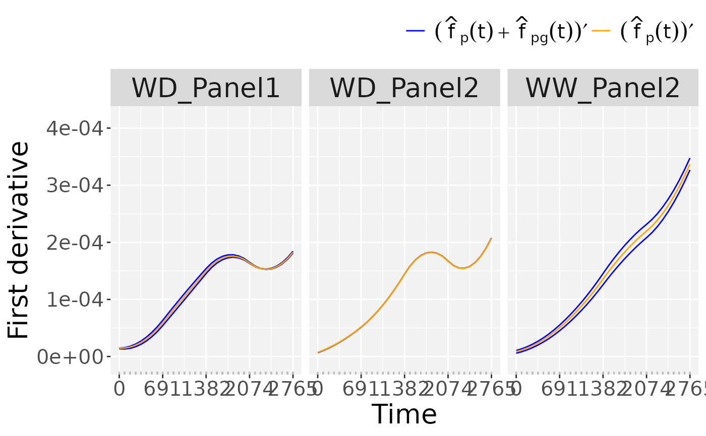
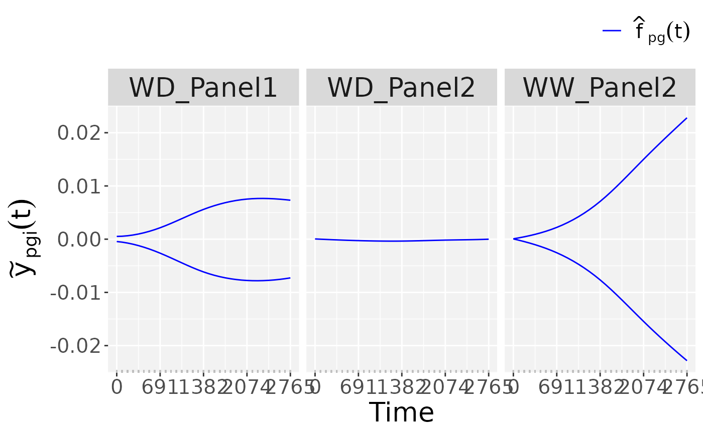

This plot function provides five plots for objects of the class psHDM
after fitting (fitSplineHDM) or predicting
(predict.psHDM): (1) Population-specific growth curves (popTra),
(2) Population and genotype-specific growth curves (for all genotypes, popGenoTra),
(3) First-order derivative of the population and genotype-specific growth curves
(for all genotypes, popGenoDeriv), (4) Genotype-specific deviations (for all
genotypes, genoDev), and (5) Genotype- and plot-specific growth curves (for a
selection of genotypes, genoPlotTra). If standard errors are available, 95% point
wise confidence intervals are depicted.
Usage
# S3 method for class 'psHDM'
plot(
x,
...,
plotType = c("popTra", "popGenoTra", "popGenoDeriv", "genoDev", "genoPlotTra"),
genotypes = NULL,
genotypeNames = NULL,
genotypeOrder = NULL,
xlab = "Time",
ylab = expression(tilde(y)[pgi](t)),
title = NULL,
themeSizeHDM = 15,
output = TRUE,
outFile = NULL,
outFileOpts = NULL
)Arguments
- x
An object of class "psHDM" as obtained after fitting (
fitSplineHDM) or predicting (predict.psHDM),- ...
Not used.
- plotType
A character string indicating which plot should be made.
- genotypes
A character vector with the genotypes for which plots at plot level are desired. Only used when
plotType == "genoPlotTra".- genotypeNames
A character vector with alternative names for the plotted genotypes (genotypes). If
NULLthe names of the genotypes are used. Only used whenplotType == "genoPlotTra".- genotypeOrder
A vector with the order of the selected genotypes (genotypes). If
NULLthen the order in the data is preserved. Only used whenplotType == "genoPlotTra".- xlab
The x-axis label of the plot.
- ylab
The y-axis label of the plot.
- title
A character string used as title for the plot. If
NULLa default title is added to the plot depending onplotType.- themeSizeHDM
Reference size for the theme
- output
Should the plot be output to the current device? If
FALSEonly a (list of) ggplot object(s) is invisibly returned. Ignored ifoutFileis specified.- outFile
A character string indicating the .pdf file to which the plots should be written. If
NULL, no file is written.- outFileOpts
A named list of extra options for the pdf outfile, e.g. width and height. See
pdffor all possible options.
References
Pérez-Valencia, D.M., Rodríguez-Álvarez, M.X., Boer, M.P. et al. A two-stage approach for the spatio-temporal analysis of high-throughput phenotyping data. Sci Rep 12, 3177 (2022). doi:10.1038/s41598-022-06935-9
See also
Other functions for fitting hierarchical curve data models:
fitSplineHDM(),
predict.psHDM()
Examples
## The data from the Phenovator platform have been corrected for spatial
## trends and outliers for single observations have been removed.
## We need to specify the genotype-by-treatment interaction.
## Treatment: water regime (WW, WD).
spatCorrectedArch[["treat"]] <- substr(spatCorrectedArch[["geno.decomp"]],
start = 1, stop = 2)
spatCorrectedArch[["genoTreat"]] <-
interaction(spatCorrectedArch[["genotype"]],
spatCorrectedArch[["treat"]], sep = "_")
## Fit P-Splines Hierarchical Curve Data Model for selection of genotypes.
fit.psHDM <- fitSplineHDM(inDat = spatCorrectedArch,
trait = "LeafArea_corr",
genotypes = c("GenoA14_WD", "GenoA51_WD",
"GenoB11_WW", "GenoB02_WD",
"GenoB02_WW"),
time = "timeNumber",
pop = "geno.decomp",
genotype = "genoTreat",
plotId = "plotId",
difVar = list(geno = FALSE, plot = FALSE),
smoothPop = list(nseg = 4, bdeg = 3, pord = 2),
smoothGeno = list(nseg = 4, bdeg = 3, pord = 2),
smoothPlot = list(nseg = 4, bdeg = 3, pord = 2),
weights = "wt",
trace = FALSE)
## Plot the P-Spline predictions at the three levels of the hierarchy
## Population-specific growth curves.
plot(fit.psHDM,
plotType = "popTra")
## Population and genotype-specific growth curves.
plot(fit.psHDM,
plotType = "popGenoTra")
## First-order derivative of the population- and genotype-specific growth curves.
plot(fit.psHDM,
plotType = "popGenoDeriv")

## Genotype-specific deviations.
plot(fit.psHDM,
plotType = "genoDev")

## Genotype- and plot-specific growth curves.
plot(fit.psHDM,
plotType = "genoPlotTra")